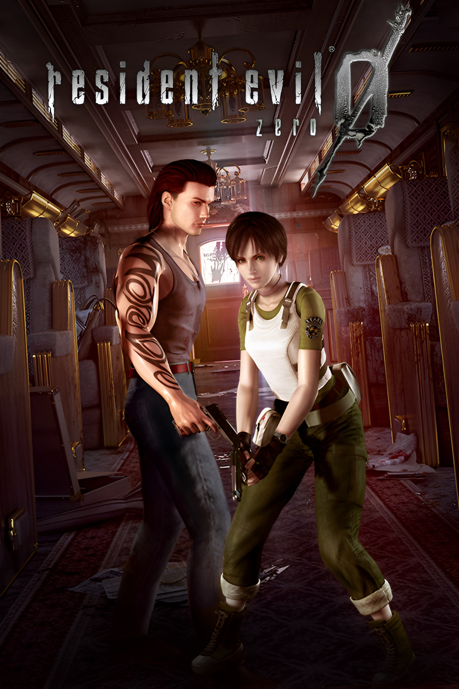

Resident Evil 0
November 12, 2002
Survival Horror
6.5
Capcom
GameCube, Playstation 4, Nintendo Switch, Wii, Playstation 3, Xbox One,
Xbox 360, Microsoft Windows
Faced with the relentless Zombies and other horrifying creatures,
S.T.A.R.S. officer Rebecca Chambers makes an alliance with Billy Coen,
an escaped criminal. Unknowingly, Rebecca stumbles into the prelude of
an event where she will be tested to her limits and her greatest fears
will be realised. Together, Billy and Rebecca must survive the nightmare
and expose the dark secrets of what has caused it.
Rebecca Chambers
James Marcus